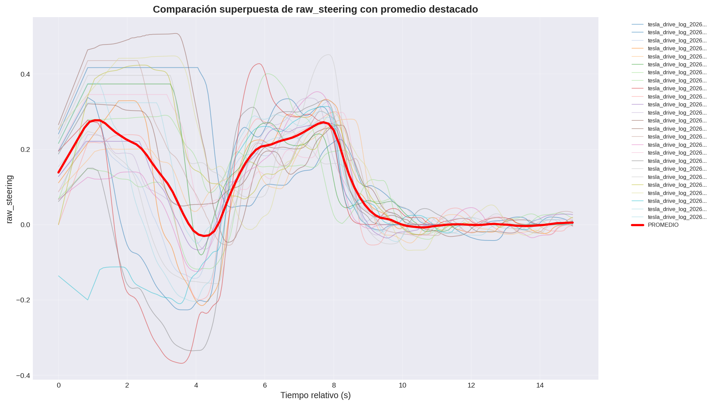
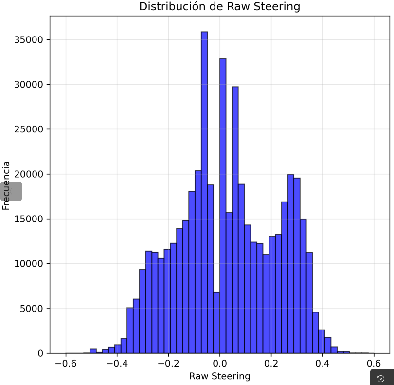
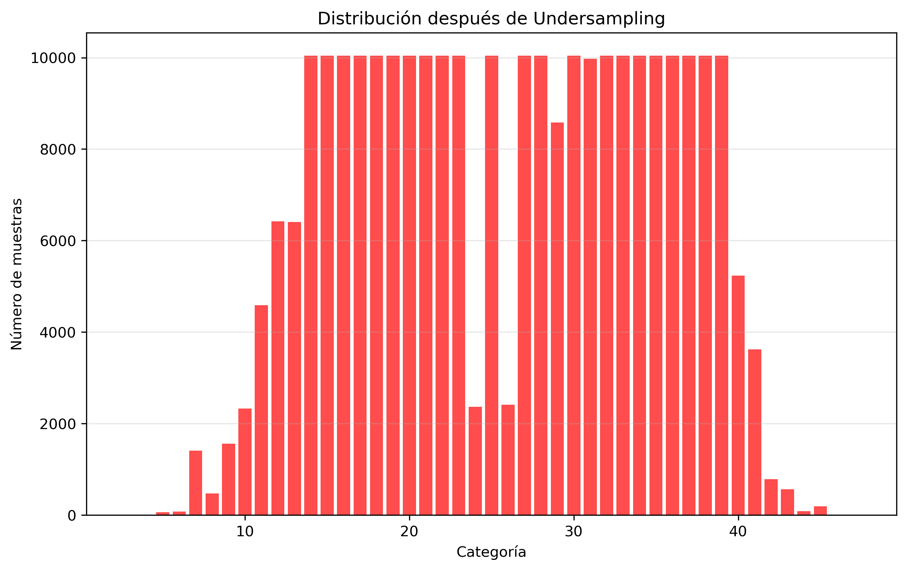
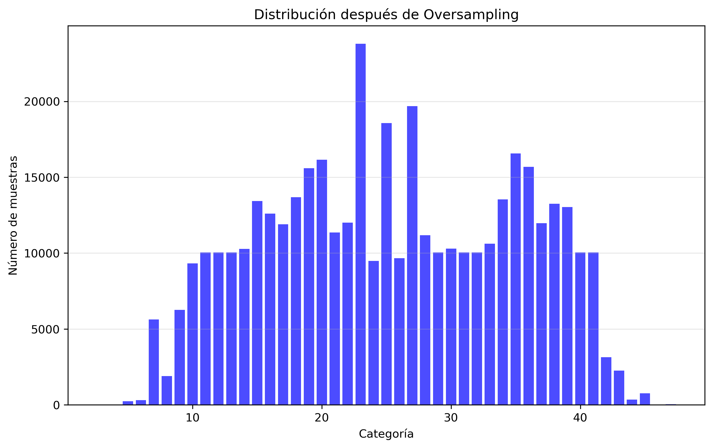

Systematic Evaluation of Class Balancing Strategies for Imitation Learning
February 24, 2026
Impact of undersampling, oversampling, and weighting on MobileNet and PilotNet using a curated multi‑maneuver dataset
Following the dynamic error analysis reported on Week 21, this week we focused on dataset curation and the empirical comparison of balancing techniques. A refined dataset was built from CARLA logs (Town04) containing three maneuver types: straight driving, lane recovery (Weak/Strong DAgger), and 90° urban turns. Image frames were generated with a 1‑second margin between samples to avoid temporal redundancy, and extreme steering commands (>45°) were filtered to remove spurious peaks. A 90° right turn repeated 25 times by a human driver is shown in Figure 1 as a qualitative example of the recorded maneuvers.

Figure 1: 90° right turn maneuver repeated 25 times by human driver (steering angle evolution).
Frame generation: extracted from log files with a 1 s safety margin between consecutive frames to avoid burst duplicates.
Steering filtering: removed commands > |45°| to eliminate unrealistic spikes and ensure driving repeatability.
Total raw samples: 362,388 frames, spanning 43 non‑zero steering categories (out of 51 bins, resolution ~1.8° per bin).
The one‑second margin directly addresses the oversampling hypothesis from previous weeks: excessive frame repetition was identified as a major cause of oscillatory behaviour.
2. Balancing Strategies – Dataset Statistics
Four configurations were prepared from the original dataset: unbalanced, undersampling, oversampling, and class weighting (applied during training, no sample count change). The table below summarises the resulting distributions.
Method
Total samples
Min per cat.
Max per cat.
Mean
Std.dev
Imbalance ratio (max/min)
Original (unbalanced)
362,388
3
23,792
8,427.6
6,494.7
7,930.7
Undersampling
278,066
3
10,041
6,466.7
4,252.4
3,347.0
Oversampling
424,831
12
23,792
9,879.8
5,679.5
1,982.7
Weighting (no resample)
362,388
3
23,792
8,427.6
6,494.7
7,930.7
Undersampling reduced total data by 23.3%, while oversampling increased it by 17.2%.

Figure 2: Original category distribution.

Figure 3: After undersampling.

Figure 4: After oversampling.
A fixed route was selected containing three distinct challenges: a slight right bend, followed by a sharp 90° left turn and an intersection. This route allows assessment of both smooth curvature handling and abrupt turn manoeuvres. All trained models were tested under identical conditions (weather, traffic‑free).
Key observation from all videos:
Compared to previous weeks, oscillations (zigzag) were drastically reduced across all balancing methods. This supports the hypothesis that the 1 second frame margin eliminated the redundant near‑identical samples that previously caused over‑sensitivity.
4. Training Results: MobileNet vs PilotNet
Eight models were trained (4 balancing treatments × 2 architectures). The weighting runs for MobileNet were still ongoing; PilotNet weighting was not completed due to time constraints. Below we summarise the behavioural outcomes.
🔹 Unbalanced dataset
MobileNet (A): No oscillations on straight, but missed the smooth right turn – vehicle continued straight. Watch Video 1
PilotNet (B): Few oscillations, successfully negotiated the right bend. Watch Video 2
🔹 Undersampling
MobileNet (C): Turned right but too late, causing off‑road exit; low oscillations. Watch Video 3
PilotNet (D): Early turn, smooth enough to stay on road; behaviour similar to unbalanced PilotNet. Watch Video 4
🔹 Oversampling
MobileNet (E): Reacted to the right bend but too weakly – understeer, near lane departure. Watch Video 5
PilotNet (F): Missed the first 90° left, but later executed a sharp right turn at the intersection with overshoot (off‑road). Watch Video 6
🔹 Weighting sampling
MobileNet (G): Training still in progress - results not available.
PilotNet (H): the model has low zig-zag and weel performance in soft and 90° turns. It also shows a too early rigth turns commands wich leads to lane loses.Watch Video 7
Qualitative summary
PilotNet consistently outperformed MobileNet in smooth turn execution, regardless of balancing, but balancing did not dramatically change PilotNet's behaviour.
MobileNet was highly sensitive to balancing: undersampling induced late turns, oversampling produced weak responses. The unbalanced MobileNet failed entirely on the right bend.
All models exhibited far fewer oscillations than in Week 19/20 experiments, confirming that frame repetition was a major source of zigzag.
5. Discussion and Conclusions
Main findings
Frame spacing matters: introducing a 1 s margin between log‑extracted images practically eliminated the oscillatory behaviour that plagued earlier models. This supports the hypothesis that repeated near‑identical frames create a false attractor in the steering distribution.
Maneuver coverage: the combination of centred driving, recovery (DAgger), and 90° turns provided a sufficiently rich basis, yet the route tested only one scenario; more environments are needed to confirm generalisation.
PilotNet vs MobileNet: PilotNet appears more robust to data distribution skew, while MobileNet’s performance heavily depends on balancing – likely due to its larger capacity and different inductive bias. This aligns with earlier observations (Week 14–17) where MobileNet excelled only with ~600k samples.
No single balancing method was universally best: Undersampling reduced imbalance but removed useful samples (hurting MobileNet). Oversampling inflated minority classes but introduced duplicates, causing weaker turns. Weighting (in‑progress) may offer a trade‑off.
Implications for future work
Expand test routes: only one Town04 segment was evaluated. Additional smooth curves and intersections will expose differences masked here.
Increase dataset size: Based on Week 14–17 results, MobileNet may need ~600k samples to outperform PilotNet. We aim to augment the current dataset by 50% (to ~540k) by collecting more recovery and turn examples.
Refine the 90° turn examples: Figure 1 shows that some individual turns contain abrupt corrections (right then left spikes). Removing those outliers could improve turn quality.
Conclusion: The reduction in oscillations confirms that dataset temporal redundancy was a critical factor. Balancing methods affect the two architectures differently, and the optimal strategy may depend on model capacity. PilotNet remains the safer choice for smooth driving, while MobileNet requires larger and carefully balanced data to unlock its potential.
6. Immediate Next Steps
Complete weighting runs: finish MobileNet weighting training and evaluate; train PilotNet with weighting for completeness.
Multi‑scenario testing: evaluate all models on at least three different Town04 routes containing varying curvature and intersections.
Dataset augmentation: collect 50% more data focusing on under‑represented steering bins and cleaner 90° turns (remove secondary corrections).
Frame‑spacing sensitivity: systematically study the effect of different margins (0.5s, 1s, 1.5s) to find the optimal trade‑off between diversity and temporal coherence.
A detailed log of all trained models and their behaviours is available in the lab repository. The weighting results for PilotNet will be reported as soon as training finishes.
SUMMARY OF FINDINGS – FEBRUARY 24, 2026:
✅ The 1 second frame margin successfully eliminated the high‑frequency zigzag observed in previous models.
✅ PilotNet demonstrates robust performance with or without balancing; it handles the smooth right turn correctly in most configurations.
✅ MobileNet is more sensitive to class imbalance: undersampling causes late turns, oversampling leads to understeer. It likely requires a larger dataset (~600k) to outperform PilotNet.
✅ Oversampling reduced imbalance ratio from 7930 to 1983, but did not translate into better MobileNet performance, possibly due to duplicated samples.
🔜 Upcoming: complete weighting experiments, expand test routes, and increase total dataset size by 50%.
Next Steps:
During the week of February 25 – March 4, we will finalise the weighting runs and start multi‑route evaluations. The goal is to consolidate a well‑balanced dataset of approximately 550,000 frames and to derive a clear guideline on which balancing method (if any) should be preferred for each architecture.